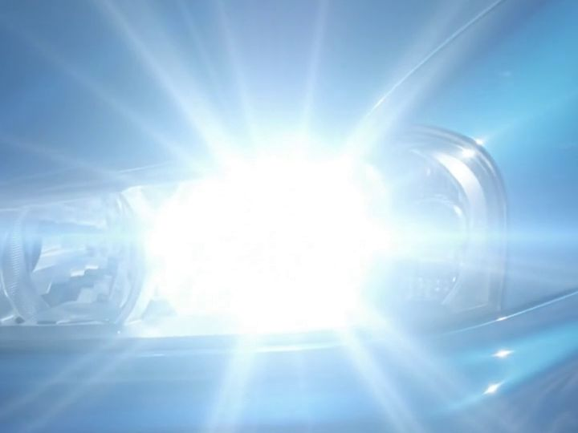
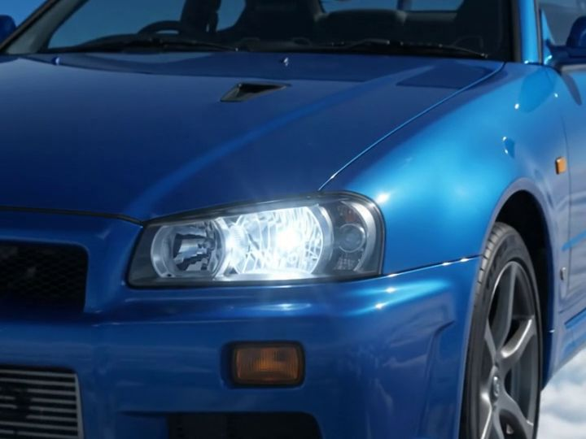
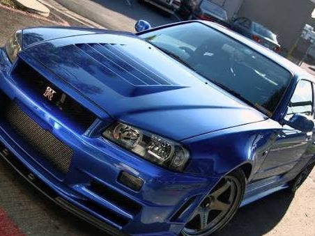
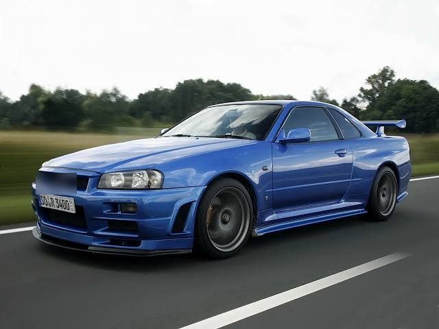
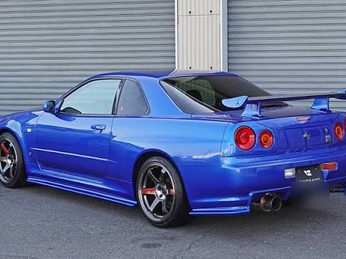
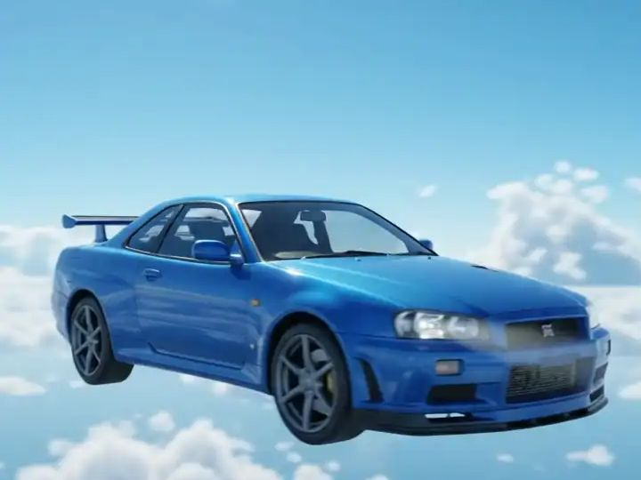
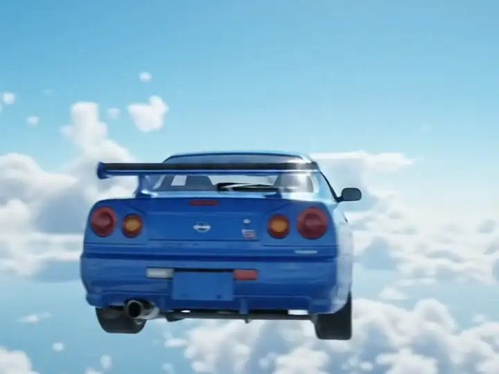

SKYLINEMOTORS
Aluguel de JDM clássico. R34 GT-R Bayside Blue.
Role pra dar a volta de 360°
- Motor RB26DETT: seis cilindros em linha, 2,6 litros e dois turbos. No papel, 280 cv.
- Tração ATTESA E-TS: integral; quando a traseira escorrega, a força vai pra frente.
- Traseira com 4 lanternas redondas.
- Câmbio manual de 6 marchas.
- Cor Bayside Blue, a assinatura do R34 GT-R.
Sete ângulos de um R34.
Arraste pro lado e o anel gira. Ou espere, que ele gira sozinho.







Agora é com você.
O ronco é de um R34 de verdade. Os tempos são de brincadeira.
- Dê a partida e espere o painel acender.
- Segure o botão pra subir o giro e solte quando acender o verde.
- Toque pra trocar de marcha quando as luzes do painel piscarem.
Recorde de 0 a 200: ainda não tem
- REAÇÃO
- —
- 0–100
- —
- 0–200
- —
Toque em dar a partida. Com som.
Tire o celular do silencioso pra ouvir.
Skyline Motors é um conceito. Quem fez foi a GuDev.